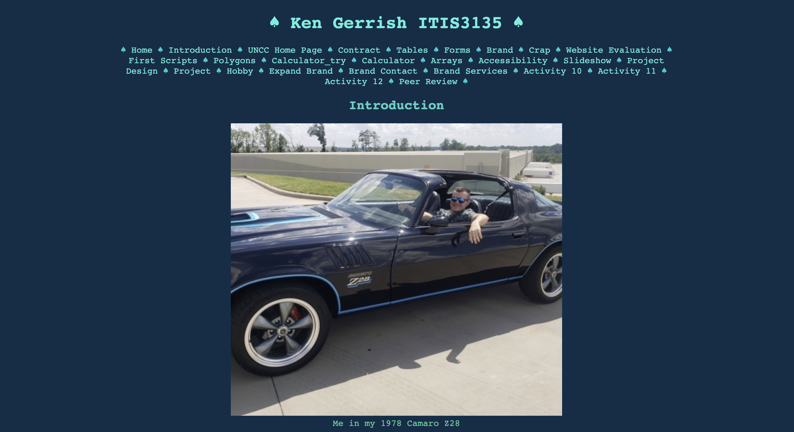
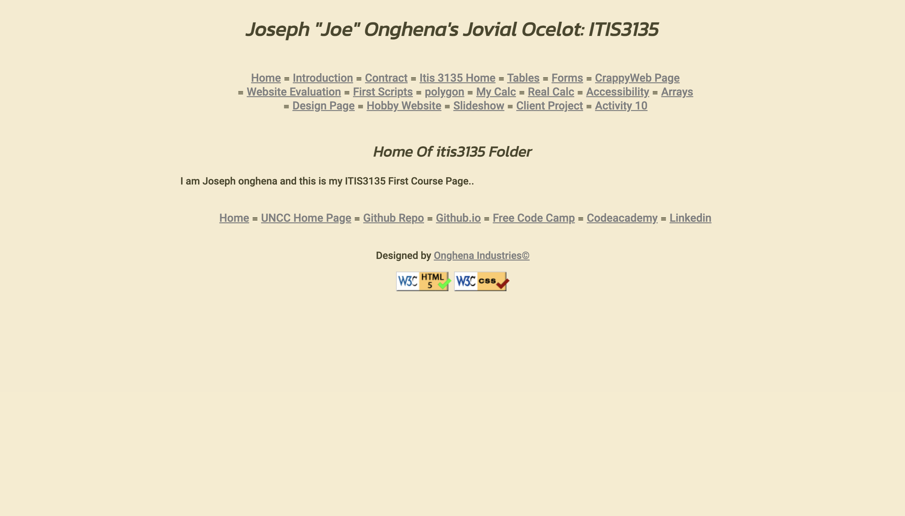

Peer Reviews
Ken Gerrish
Ken's ITIS 3135 Intoduction Page
- Accessibility page doesn't have background image, and the table is red on red which makes it very difficult to read.
- The radio buttons on your forms page don't have a consistent margins.
- It might be best to increase the left and right margin so the text isn't too close to the edge of the window.
- The green and blue colors in the body look very similar (At least on my screen), you should try to find another color that would contrast with the dark blue.
- Validation works great with no errors, and you added the script to test the current page.
- The text is very easy to read because of the sans-serif font and great contrast.
- Files are all organized and have all lowercase letters.
- You included a single h1 element for each page and all titles correspond the the right page.
Overall thoughts: The structure of the website is great with only some minor problems that are easy to fix. Everything else including your external websites look great, and don't need to be changed much, if at all. Great job!
Joseph Onghena
- All links are underlined, in your styles you should set "text-decoration: none".
- The link dividers make the navs seem cluttered, it might be better to pick something that is simpler.
- Image in the "Name the Polygon" assignment isn't appearing
- Contrast looks great with the cream colored background and grayish black letters.
- Validation works great with no errors, and you added the script to test the current page.
- Included h1 that is the same for every page, and added h2 elements with the name of the page
- All files are organized and have all lowercase letters
Overall thoughts: Everything looks great on your website. Just fix the underlined text with the links, but besides that and maybe the dividers everything looks as expected. Great work!